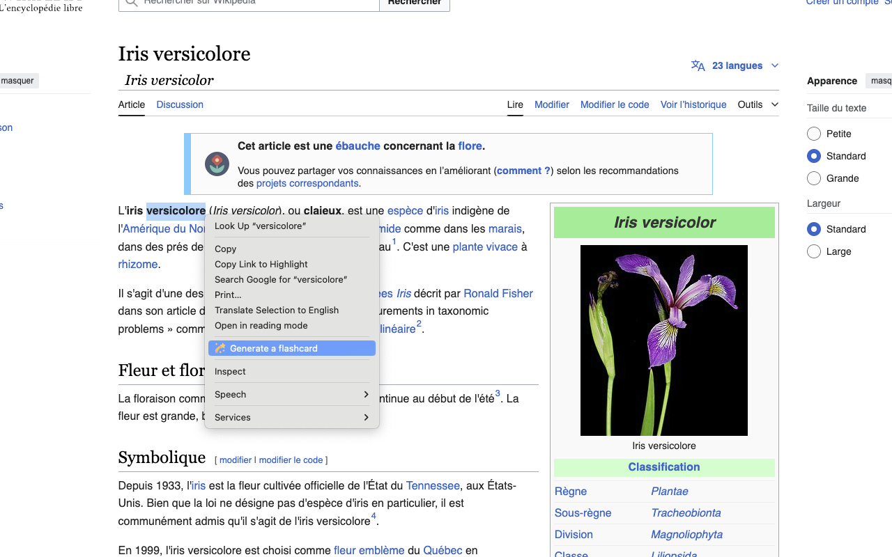
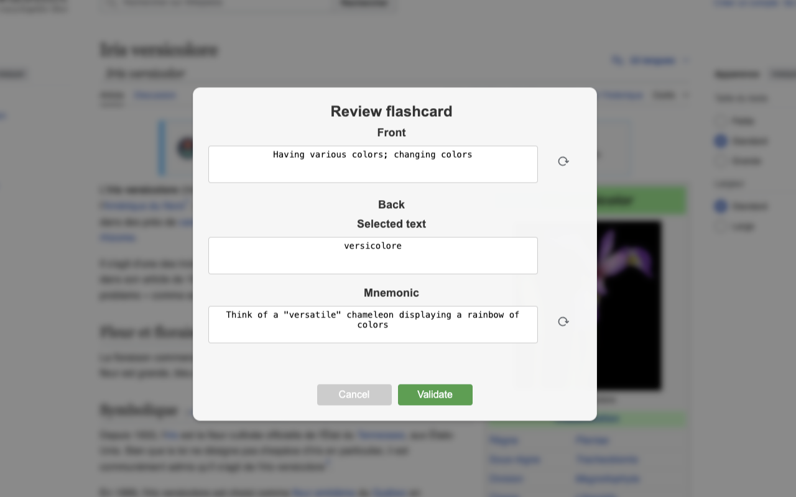

🚀 Padroneggia una Nuova Lingua in Mesi, Non in Anni: Usa AnkiLingoFlash per Costruire Rapidamente una Solida Base di Vocabolario
📚 Indice
- Introduzione: I Vantaggi dell’Apprendimento delle Lingue
- L’Importanza e la Sfida dell’Acquisizione del Vocabolario
- L’Ingrediente Segreto: Ripetizione Spaziata e Flashcard Generate dall’IA
🌍 Introduzione: I Vantaggi dell’Apprendimento delle Lingue
Imparare una nuova lingua è più di un semplice hobby: è una porta verso innumerevoli opportunità. Può migliorare significativamente le tue prospettive di carriera, permettendoti di comunicare con un pubblico globale e accedere a mercati del lavoro internazionali. Oltre ai benefici professionali, arricchisce la tua vita personale, permettendoti di stabilire connessioni più profonde con persone di diverse culture e ampliando la tua visione del mondo.
🎯 L’Importanza e la Sfida dell’Acquisizione del Vocabolario
💡 L’Importanza dell’Acquisizione del Vocabolario
Mentre l’apprendimento delle lingue comprende vari aspetti come grammatica, pronuncia e comprensione culturale, il vocabolario forma la base della comunicazione. Senza parole, anche la grammatica più perfetta è inutile. Le ricerche mostrano che padroneggiare le 3000-5000 famiglie di parole più frequenti in una lingua ti permette di comprendere il 95-98% della maggior parte dei testi ordinari. Questa intuizione ci permette di concentrare efficacemente i nostri sforzi sull’acquisizione del vocabolario essenziale.
🚣 La Sfida dell’Acquisizione del Vocabolario
Nonostante l’evidente importanza del vocabolario, acquisirlo efficacemente rimane una sfida significativa. Gli approcci tradizionali spesso adottano una strategia unica per tutti, non riuscendo a soddisfare le esigenze uniche, gli interessi e i ritmi di apprendimento dei singoli studenti.
La personalizzazione è cruciale ma spesso trascurata. Mentre un medico potrebbe aver bisogno di dare priorità alla terminologia medica, una guida turistica richiede un vocabolario legato ai viaggi. I materiali di apprendimento standard raramente tengono conto di queste esigenze specifiche, risultando in un apprendimento inefficiente e una motivazione diminuita.
Inoltre, la maggior parte dei metodi di apprendimento convenzionali trascura di sfruttare potenti tecniche cognitive che possono accelerare drasticamente l’acquisizione e la ritenzione del vocabolario. Le strategie per migliorare la memoria non dovrebbero essere dominio esclusivo degli esperti di neuromarketing; gli approcci all’apprendimento delle lingue possono e dovrebbero incorporare questi trucchi per aiutare le nuove parole a rimanere davvero impresse nella mente degli studenti.
Queste sfide richiedono un approccio innovativo all’apprendimento del vocabolario - uno che personalizzi il contenuto, si adatti alle velocità di apprendimento individuali e sfrutti tecniche di memoria efficaci. La soluzione sta nel combinare principi di apprendimento collaudati con la tecnologia moderna, come esploreremo nelle sezioni seguenti.
🍯 L’Ingrediente Segreto: Ripetizione Spaziata e Flashcard Generate dall’IA
📈 Comprendere il Processo di Revisione
Il processo di revisione gioca un ruolo critico nel consolidare la conoscenza nella memoria a lungo termine. Più rivisiamo un’informazione, più profondamente si radica nella nostra memoria.

Con ogni sessione di revisione, il periodo di ritenzione dell'informazione memorizzata si estende. Fonte: Wikipedia
{kind=link}
Di conseguenza, per un apprendimento ottimale — in termini di uso efficiente del tempo — è essenziale che le ripetizioni siano sempre più distanziate nel tempo.
Tuttavia, è importante notare che l’intervallo tra le revisioni può variare da persona a persona e da concetto a concetto. Fattori come la complessità del materiale e le prestazioni individuali durante le revisioni giocano un ruolo significativo in questa variazione. È qui che Anki interviene con un approccio algoritmico e adattivo.
🖥️ Anki: Un Programma di Flashcard che Sfrutta la Ripetizione Spaziata
Anki è uno strumento potente che sfrutta la teoria della ripetizione spaziata per ottimizzare il nostro apprendimento. Al suo cuore, Anki utilizza flashcard - strumenti di apprendimento semplici ma efficaci con una domanda da un lato e la risposta dall’altro.
Ciò che distingue Anki è il suo approccio sofisticato alla programmazione di queste flashcard. Utilizzando algoritmi avanzati, Anki calcola la data ottimale per rivedere ogni carta basandosi sulle tue prestazioni passate. Quando rispondi correttamente a una carta, Anki estende l’intervallo prima della tua prossima revisione di quella carta. Al contrario, se commetti un errore, l’applicazione accorcia l’intervallo. Nel tempo, questa metodologia porta a revisioni sempre più distanziate per ogni elemento memorizzato, promuovendo una consolidazione della conoscenza efficiente e duratura. Attraverso Anki, puoi quindi concentrarti sugli elementi che richiedono più attenzione, rendendo il tuo apprendimento non solo più efficace ma anche più mirato.
🤖 AnkiLingoFlash: Uno Strumento per Automatizzare il Processo di Creazione delle Flashcard
Tuttavia, creare queste flashcard manualmente può essere un processo che richiede tempo e spesso tedioso.
È qui che AnkiLingoFlash interviene per facilitare il tuo processo di apprendimento. Come estensione del browser, si integra perfettamente con la tua esperienza di navigazione web. Seleziona semplicemente qualsiasi parola o frase che incontri online, e AnkiLingoFlash sfrutta l’intelligenza artificiale per generare istantaneamente flashcard di alta qualità.
🛠 Flusso di Lavoro di AnkiLingoFlash
Ecco come funziona AnkiLingoFlash nella pratica:
🖱 Selezione delle Parole

Seleziona il testo e fai clic destro: Evidenzia una parola o una frase, fai clic destro e scegli l'opzione per generare una flashcard.
📝 Generazione delle Carte

Rivedi la flashcard: Controlla la definizione e il mnemonico generati dall'IA. Richiedi una nuova generazione o modifica manualmente se necessario.
✅ Conferma della Lingua

Scegli il mazzo: Seleziona il mazzo Anki a cui aggiungere la tua nuova flashcard, e hai finito! Inoltre, definisci la lingua della parola selezionata se il rilevamento automatico fallisce.
📚 Revisione in Anki


Revisione in Anki: Dopo aver creato le tue flashcard, rivedile in Anki e usa la guida alla pronuncia tutte le volte che ne hai bisogno.
Queste non sono semplici coppie parola-definizione. Ogni flashcard è attentamente strutturata per ottimizzare l’apprendimento:
Fronte della carta (lato domanda):
- Una definizione chiara e concisa del termine
Retro della carta (lato risposta):
- Il termine selezionato e la sua traduzione diretta nella tua lingua preferita
- Una guida audio alla pronuncia del termine
- Un aiuto mnemonico generato dall’IA per una migliore ritenzione
Automatizzando il processo di creazione delle carte, AnkiLingoFlash ti permette di concentrarti su ciò che conta veramente: imparare e ricordare nuovo vocabolario. Questa focalizzazione sull’acquisizione del vocabolario è cruciale nell’apprendimento delle lingue, poiché forma la base per la fluidità e la comunicazione efficace.
🏆 Progressi Rapidi con AnkiLingoFlash e Anki
Ad esempio, raggiungere un livello B2 — considerato fluente per la maggior parte degli scopi pratici — tipicamente richiede la conoscenza di circa 4.000 parole. Con AnkiLingoFlash, puoi raggiungere questo traguardo in meno di 9 mesi, dedicando solo 20 minuti al giorno all’apprendimento di 15 nuove parole e alla revisione di quelle esistenti. Questo approccio mirato ti aiuta a costruire rapidamente una solida base, preparando il terreno per una comunicazione sicura nella tua lingua target.
Trasforma la tua navigazione quotidiana in un’opportunità di apprendimento linguistico senza sforzo, rendendo il percorso verso la fluidità non solo più veloce, ma anche più piacevole e integrato nella tua vita quotidiana.
Per ulteriori informazioni sulle lingue supportate e i prezzi, consulta le sezioni Lingue Supportate e Prezzi sulla homepage. Per le istruzioni di installazione, consulta la Guida all’Installazione.